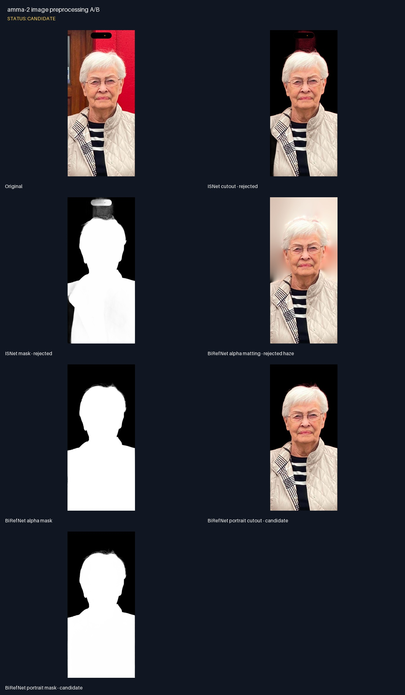
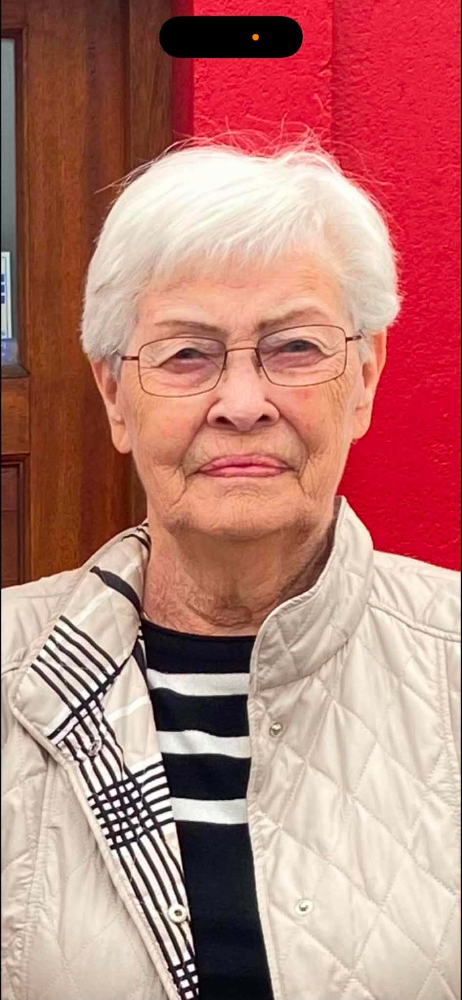
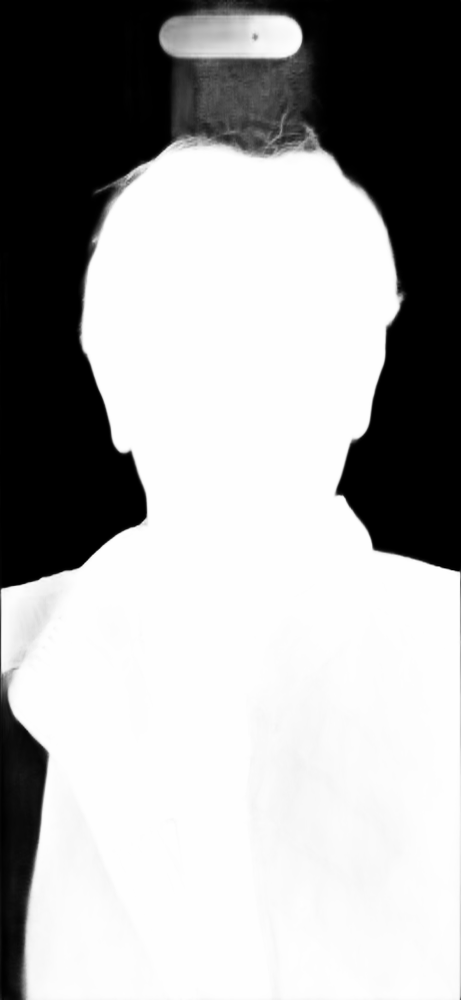
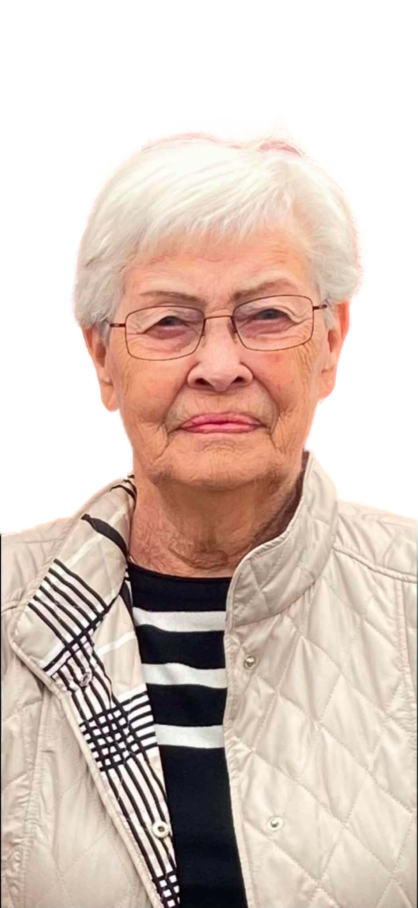
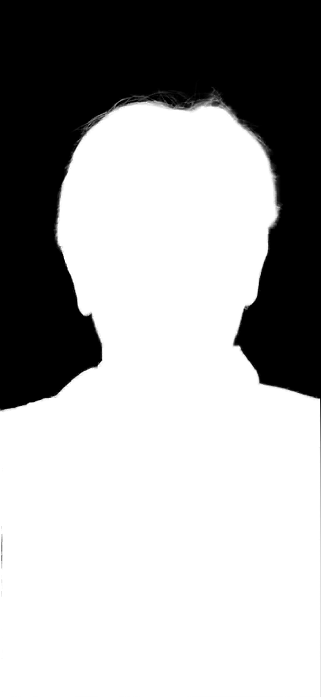
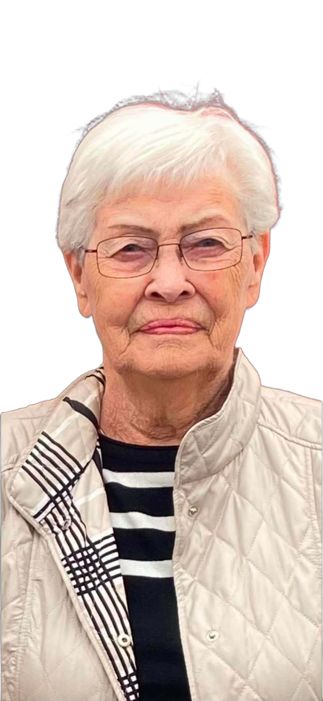

amma-2 image preprocessing A/B
Status: CANDIDATE
- ISNet kept the phone overlay and red wall above the head.
- BiRefNet with alpha matting removed the object but left translucent background haze.
- BiRefNet portrait without alpha matting is the selected input for the next 2.5D run.
- No face enhancement was applied; likeness remains source-derived.

Contact sheet
Original
 ISNet cutout - rejected
ISNet cutout - rejected

ISNet mask - rejected

BiRefNet alpha matting - rejected haze

BiRefNet alpha mask

BiRefNet portrait cutout - candidate
BiRefNet portrait mask - candidate